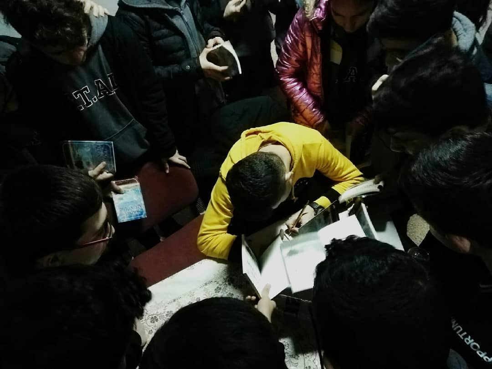

İnsan insanı ne ile tanır? Tanışalım derim, tanışmak lazım. İki kelam edip, bizdeki öze ulaşmak lazım. Tanımak göze hitap mıdır dersiniz? Başka seçenek sunmazsanız ğalat-ı kübra edersiniz. Ben kimim? Kayıp bir vehmim. Gözde değilim, gözde değilim, gözde değilim. Adım ve şanımdan silkelenirim. Siz Değerli dostlara kendimi şöyle ifade ederim: Birileri bir yerde hayvan seviyorsa, o benim. Ayn-ür rıza ile bakıyorsa biri, o benim. Bir ağaç dikip, bir çiçek koklanılıyorsa; bir çocuğa dokunmaya kıyılamıyor üsluplar güzellikten yana kullanılıyorsa... O BENİM. Ben kimim? Sana nasıl gelenim. Aman ha! Enaniyet sanmayın. Ben, sen, biz. işte bunlardan ibaretiz. Göze değil, gönle hitap etmeliyiz. Memnun oldum BENDENİZ
Müphem bir bakışla
Sana gelmek şimdi...
Yağmuru saclarımda toplayıp sana vermek,
Güneşi bizim dünyamıza çekmek,
Şimdi en büyük adımlarla sana gelmek...
Mesela toprağı sıyırıp da ölmüşlüğümle gelmek,
Yüzümde ellerini barındırmak için gelmek,
Sevgimi anlamak ama anlatamamak gibi gelmek mesela...
Hemen şimdi!
İlk buluta asılıp da gelmek,
Engelleri bir bir aşıp
Yarınların kolundan tutup da gelmek,
Heybemdeki mercan mavisi gözlerinle gelmek...
Gelmek için uğrunda dövüşebilmek,
Sevinçle kavuşmak için gelmek,
Gelmek işte Gelmek!
Gelip de seni görememek,
Tıpkı ölüp ölüp dirilmek...
Konuşma konusunda insanların üç halinden söz etmek mümkündür. Bunlardan ilki: anlaşılmak istemeyenlerdir. Bu kişiler bilgeliği laf cambazlığı zanneder. Aşina olmadığımız zorlu kelimeler seçerek konuşmaya çalışırlar. Raflardaki tozlu kelimelerle cümle kurarlar. Bunun yanlış olduğunu savunmuyorum. Doğruluğunu ise kelimelerin hakkını vermekte buluyorum. Bilge görünmek için süslü konuşmak yerine kurdukları cümlelerin anlamlarını öncelikle kendileri anlamlı diye vurgulamak isterim. Bu kişiler aynı zamanda eksikliklerini örtbas etmek için anlaşılmamayı bilerek tercih ederler. Çünkü öyle yaptıklarında kendilerine bilge duruşunun aşılandığını düşünürler. Gerçekte ise bunlar kırk delil olsa bile yola gelmeyecek kişilerdir. Bunların adına ne denildiğini siz daha iyi bilirsiniz. İkinci kategoridekiler ise yerinde konuşup bir daha yerine göre cümle kuranlardır. Bunlar üsluplarını çoğunluğa hitap etme yolunda kullanırlar. Bazen yalın bazen de ağır bir dille konuşmayı tercih ederler. Anlattıklarından emin oldukları için dilleri her ortamda anlaşılırdır. Bunlara da orta yolu bulanlar diyelim. Son kategoride yer alanlara susanlar, hiç konuşmayanlar deriz. Gözlemde iyi oldukları kadar sustukları, içlerinden oluşturdukları birer dağdır. Her ne kadar bilgisiz, zayıflık diye adlandırsak da kişilerin bilge olduğunu sonradan fark edersiniz. Büyüklerin deyişiyle "Alimin karşısında susmak edeptendir." etnik değerlerimize göre "konuşanın yanında susmak saygıdandır." Ve dini bakış açısıyla "acıda susmak inançtandır." Sessizlikten ibaret olan susmayı bu şekilde çeşitli başlıklar altında toplayabiliriz. Bu başlıkların yanı sıra susmanı sığınak olduğunu bilenler vardır. Bunu bilenler de susmanın en büyük çığlık olduğunun farkındadır. Bu kitaba göre nerede susup nerede konuşulması gerektiğini bilenler bilgedir. Körkütük susmak ahrazlıktır. Susan kişinin çığlığını duymak ise benan olmaktır. Marifet, derde derman kalmaktır.
Tüm Hakları Saklıdır. © | 2024
Design By
Muhammed Nuri Gültekin